CS280A · Project 3
The Power of Flow Models
In Part A, we use a pretrained text-to-image flow model to study flow matching: forward noising, one-step and iterative denoising, classifier-free guidance, and applications to image editing, visual anagrams, and hybrid images. In Part B, we train a UNet on MNIST from scratch, first as a single-step denoiser and then as a flow matching model with time and class conditioning.
Part A
Part B
Part A · Exploring the Power of Flow Models
Part A · 1.1
Constructing Noisy Training Inputs
Flow matching trains on linear interpolations between Gaussian noise and clean images, indexed by a time \(t \in [0, 1]\). We use a single noise sample \(\epsilon\) for all three time steps, so only \(t\) changes.
As shown below, at t = 0.25 only the coarse outline of the dog survives, while at t = 0.75 the image is just grainy.
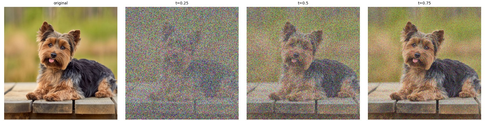
Part A · 1.2
Classical Denoising
As a classical baseline, we rescale \(x_t\) by \(1/t\) to restore the image intensity. This leaves \(x_1\) plus Gaussian noise with standard deviation \((1-t)/t\), which we remove with a Gaussian blur. For each \(t\), we choose \(\sigma \in \{1, 2, 4, 8, 16\}\) that minimizes the MSE to the clean image.
As shown below, the optimal \(\sigma\) halves as \(t\) increases (8, 4, 2), following the drop in noise level. Since blur cannot separate noise from texture, the fur is removed along with the noise, and at t = 0.25 only colored blotches remain.
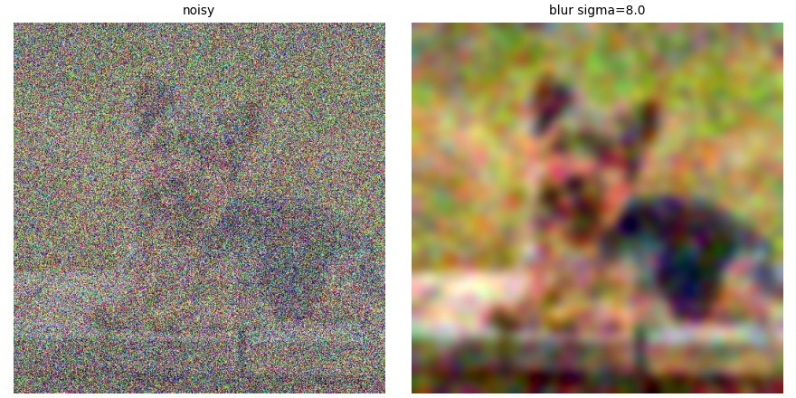
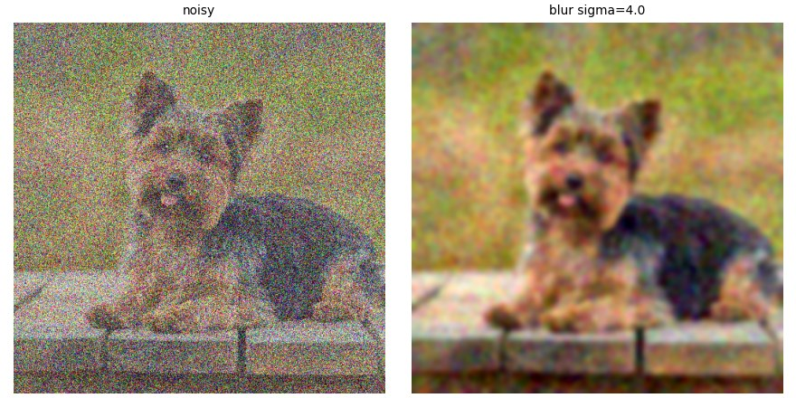
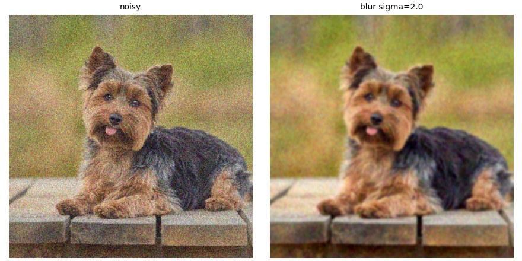
Part A · 1.3
One-Step Denoising
The model predicts a velocity \(v_\theta(x_t, t, c) \approx x_1 - \epsilon\). Since \(x_1 - x_t = (1-t)(x_1 - \epsilon)\), a single step of size \(1-t\) reaches \(x_1\) exactly when the prediction is perfect. We condition on \(c\) = “a high quality photo”.
As shown below, one step outperforms the blur at every \(t\). Even at t = 0.25 the pose and colors are correct, but the result is over-smoothed. With an MSE objective, the model predicts the conditional mean \(\mathbb{E}[x_1 \mid x_t]\), which averages over many plausible sharp images. As \(t\) increases, this distribution narrows and the estimate becomes sharper.
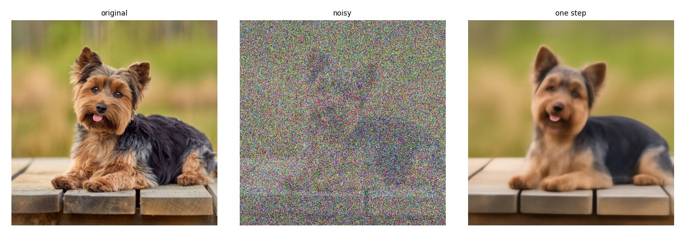
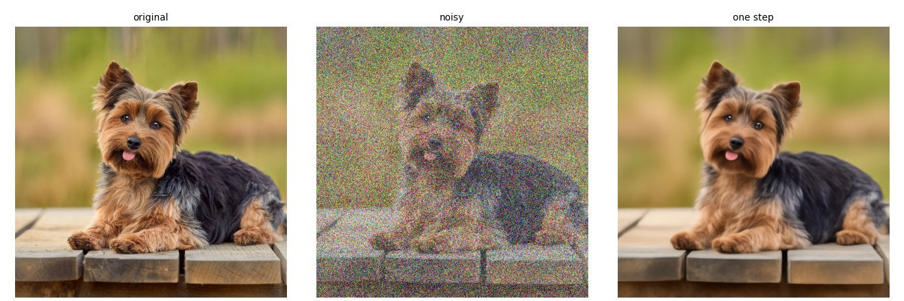
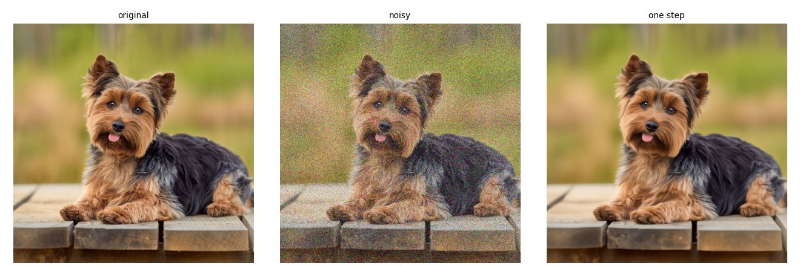
Part A · 1.4
Visualizing Velocity
Since we have the clean image, we know the ground-truth update \(x_1 - x_t\) at each \(t\). We compare it with the predicted update and compute the per-pixel RMS error over RGB. Updates are shown on a symmetric scale centered at gray, and all error maps share one color range.
As shown below, the error concentrates on high-frequency structure (fur, eyes, board edges), the same detail missing in 1.3. It decreases with \(t\), both because the update is scaled by \(1-t\) and because the input has more signal.
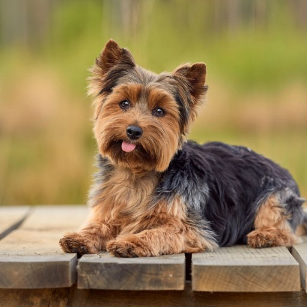
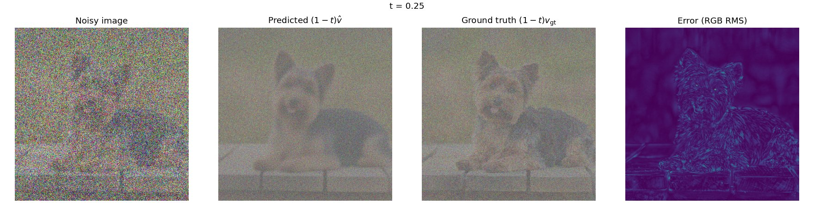
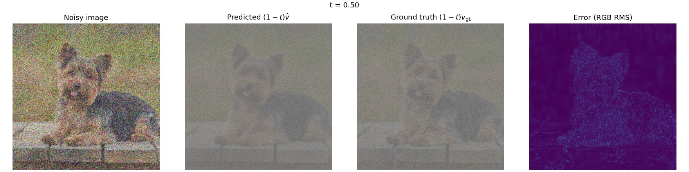
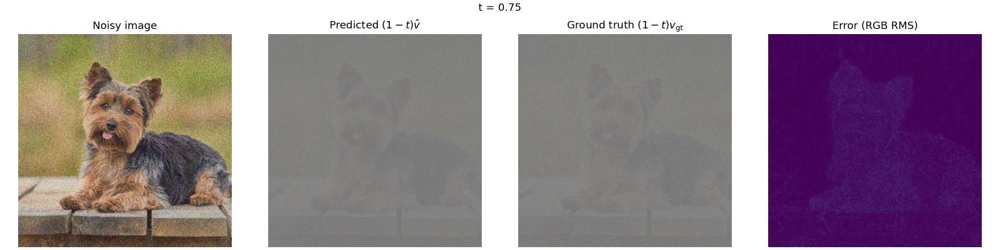
Part A · 1.5
Iterative Denoising with Euler Sampling
We take many small steps here instead of a single jump, and evaluate a new velocity at each step. Starting from the t = 0.5 input, this takes 25 updates.
As shown below, Euler recovers individual strands of fur that one-step denoising smooths out. Its MSE is still higher than the one-step estimate. The one-step estimate is the conditional mean, which minimizes MSE by construction, while Euler produces a single sharp sample whose fine texture does not align pixel by pixel with the original.
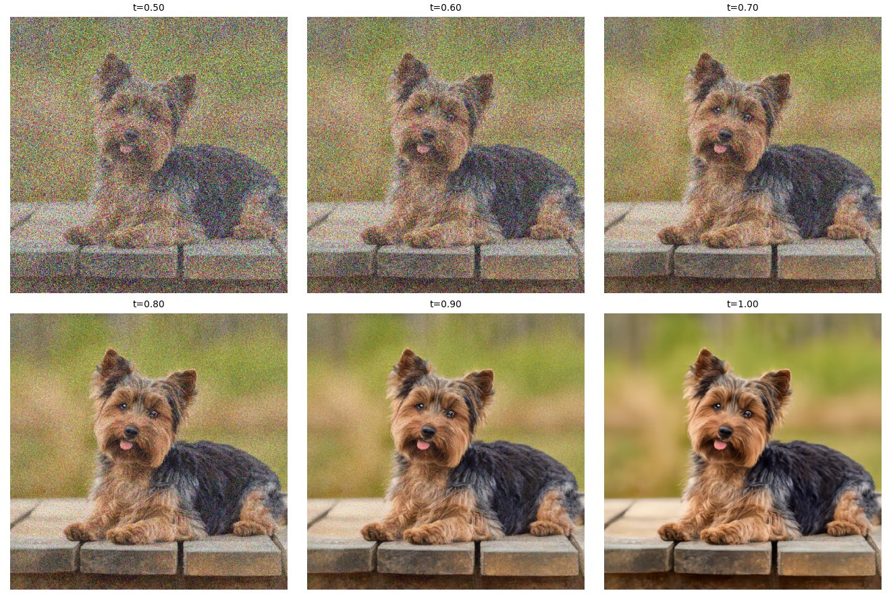
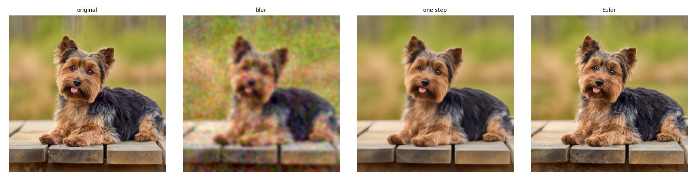
| Method (t = 0.5) | MSE |
|---|---|
| Gaussian blur (\(\sigma = 4\)) | 0.0158 |
| One step | 0.0070 |
| Euler, 25 steps | 0.0089 |
Part A · 1.6
Generating Images from Noise
We run the same sampler from \(t = 0\) with pure noise (seeds 180–187) and the prompt “a high quality photo”, without guidance.
As shown below, all eight samples are head-and-shoulders portraits, so the model associates the generic prompt with portraits. Quality varies widely: seed 180 has no face and seed 183 is distorted, while 182 and 184 are reasonable. Without guidance, the conditional velocity stays close to an average over many images, and fine structure is not resolved.
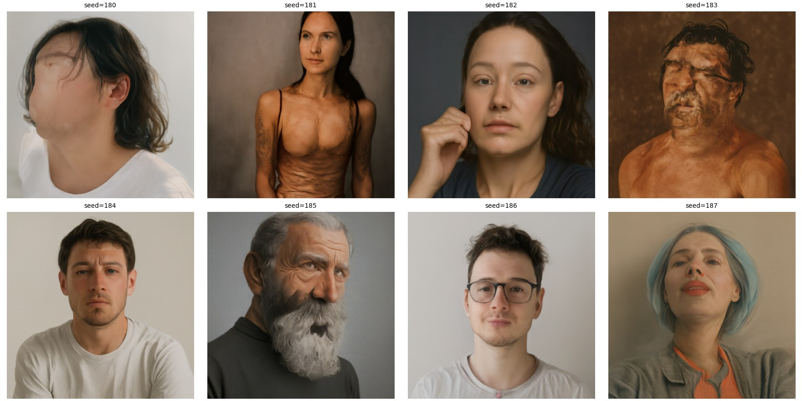
Part A · 2.1
Classifier-Free Guidance (CFG)
CFG evaluates the model with the prompt (\(v_c\)) and with the empty prompt (\(v_u\)) at the same \(x_t\) and \(t\), then extrapolates along their difference. Setting \(w = 0\) recovers conditional sampling. We reuse the initial noises from 1.6.
As shown below, CFG fixes the failure cases from 1.6: seed 180 now has a full face and seed 183 is a normal portrait. All samples are sharper, with cleaner faces and lighting. The cost is diversity. Every sample is now a centered studio headshot with similar lighting, and the older and more stylized subjects from 1.6 are gone.
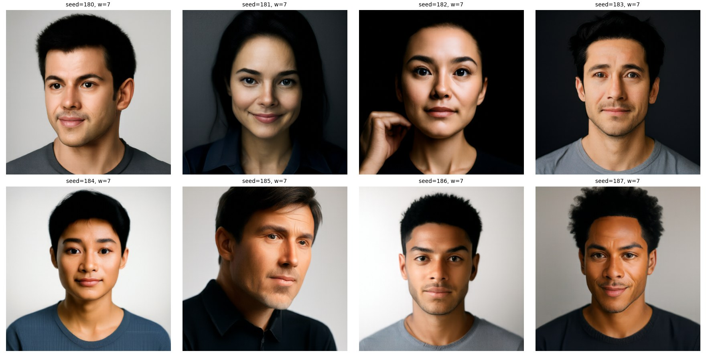
Part A · 3.1
Image-to-Image Editing
We noise an input image to a start time \(t_s\) using the forward process from 1.1, then integrate with CFG from \(t_s\) to 1. A smaller \(t_s\) leaves more noise, which gives the model more freedom to change the image.
As shown below, low start times keep only color and coarse layout, while high start times keep the image. The Campanile keeps its tall white silhouette at every start time and recovers its windows and clock only at 0.25–0.5. The Yorkie turns into people for ts ≤ 0.06, as the tan region is read as skin, and into a dog–human mix at 0.10–0.14. The cat becomes a tablet, a person in bed, and a book, each keeping the white diagonal shape. At 0.25 the chair is back while the cat is still a white blanket, so coarse structure returns before fine detail.
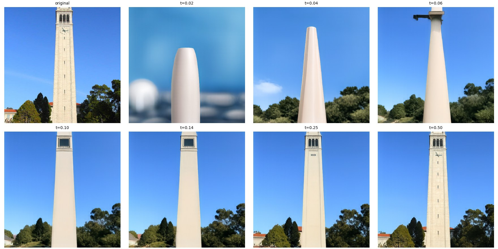
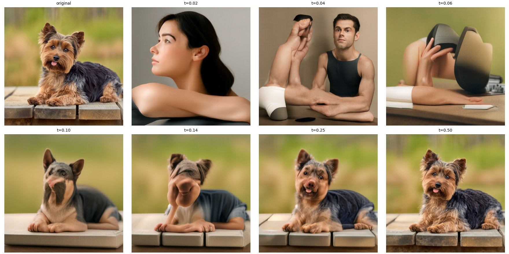
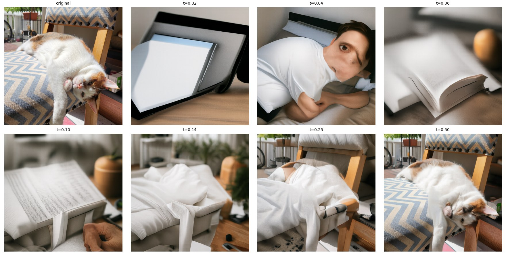
Hand-Drawn and Web Images
This procedure is most interesting for non-realistic inputs, which the model projects onto the manifold of natural images. We use a Picasso-style face from the web and two simple drawings.
As shown below, the painting is projected most clearly. At 0.02 it becomes a photo of a woman, and at 0.06–0.10 photographic eyes, nose, and lips appear inside the flat color blocks. The drawings never become a realistic dog or cat. Below 0.06, the model replaces them with typical photos of a tan or gray shape on white: a portrait, a catalog shirt with imitated caption text, a gray object in a hand. From 0.06 on, it keeps the cartoon, since clip art is also part of its training distribution. At 0.10 the puppy briefly takes on a human face.
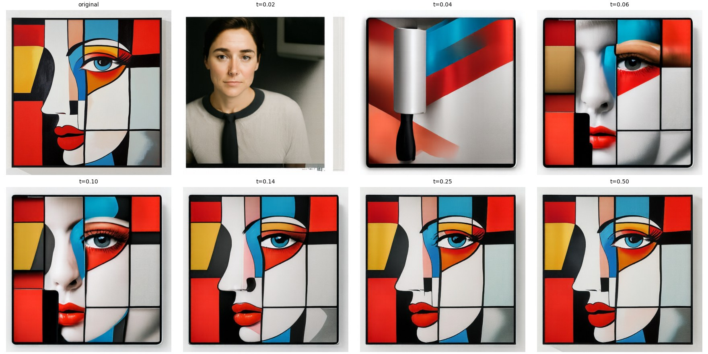
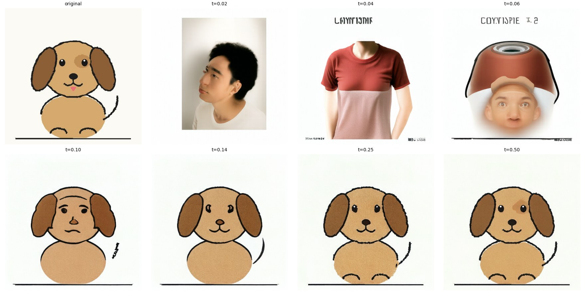
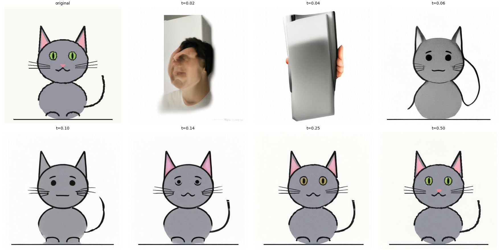
Part A · 3.2
Text-Guided Image Editing
We repeat 3.1 with a new text prompt in place of “a high quality photo”. Each prompt roughly matches the shape and colors of its input, so the edit stays anchored to the original layout.
As shown below, the prompt dominates at low start times and the original is lost. The middle start times are the most interesting. At 0.10 the doctor’s gown stretches to fill the tower’s silhouette. At 0.25 the muffin takes the dog’s place, with the dark back rendered as a chocolate lump, and at 0.5 the Yorkie keeps its shape with muffin-like fur. At 0.5 the beluga lies across the chevron chair in the cat’s pose.
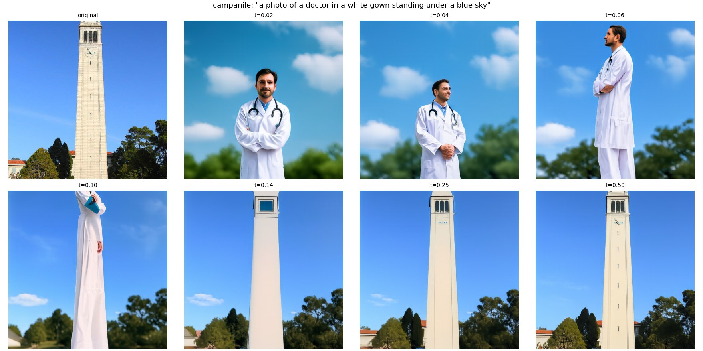
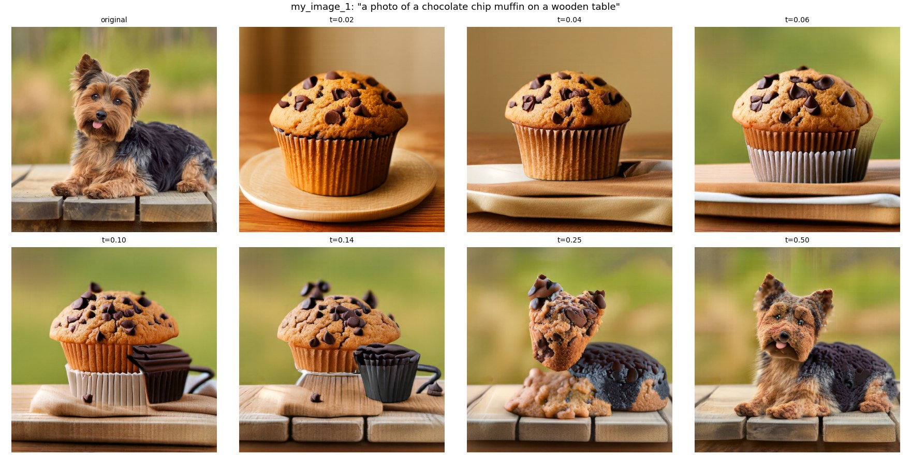
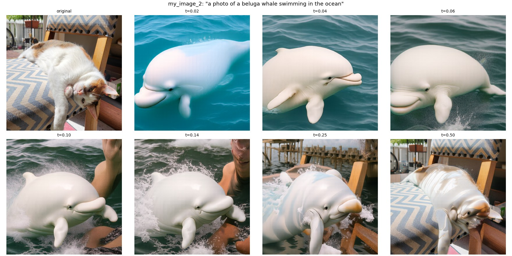
Part A · 3.3
Visual Anagrams
At each Euler step, we compute the CFG velocity for prompt \(p_1\) on \(x_t\) and for \(p_2\) on the 180°-rotated \(x_t\), rotate the second one back, and average the two. The result follows \(p_1\) upright and \(p_2\) when flipped.
As shown below, in the first anagram the campfire becomes the glow on the old man’s forehead, and the people become the shadows of his face. In the second, the mountains and rooftops of the village form the horse’s body when flipped.
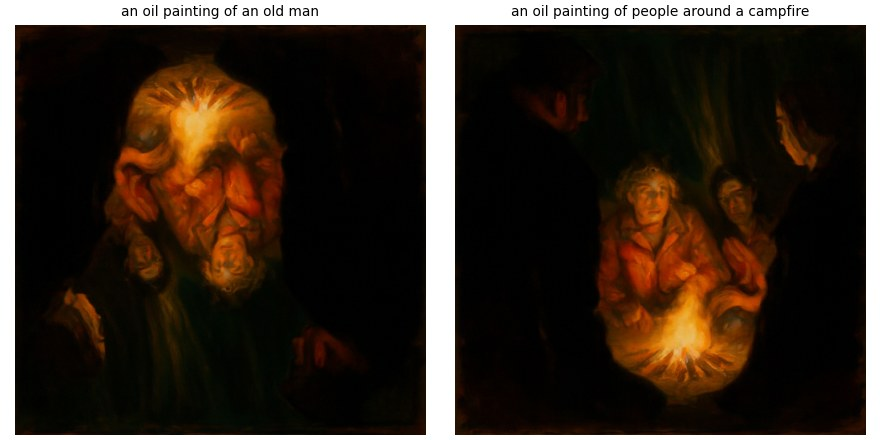

Part A · 3.4
Hybrid Images
We combine the low frequencies of one velocity estimate with the high frequencies of another. This is the hybrid image from Project 2, applied to the velocity at every step rather than to finished images. The high-pass component is the velocity minus its low-pass version.
As shown below, the waterfall and the forest dominate up close. Viewed small, the waterfall’s outline and dark falls form a skull, and the two tree crowns at the top form the cat’s ears.
Bells & Whistles
More Visual Anagrams
We generalize 3.3 to any orthogonal view \(V\), following Visual Anagrams (Geng et al., 2024). Orthogonality keeps \(V\epsilon\) standard Gaussian, so the model sees in-distribution inputs at every step. We use a 90° rotation and color negation.
As shown below, in the rotation anagram the lighthouse roofs become the fox’s eye and snout, and the cliff becomes its fur. Negation needs an image that reads correctly in both polarities. A charcoal style works well here, since an inverted gray drawing still looks like a drawing.
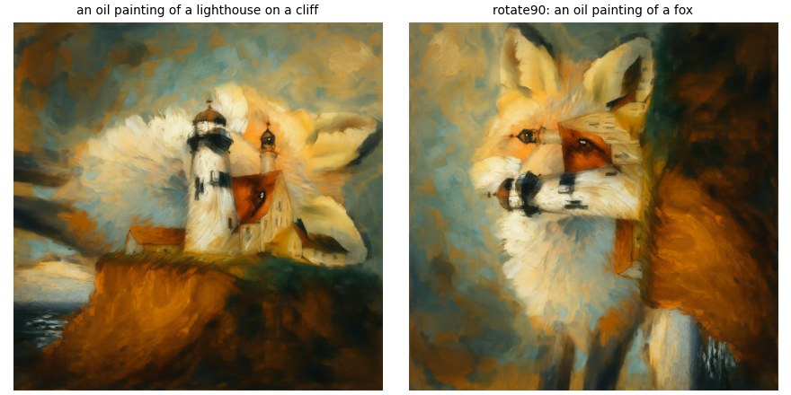
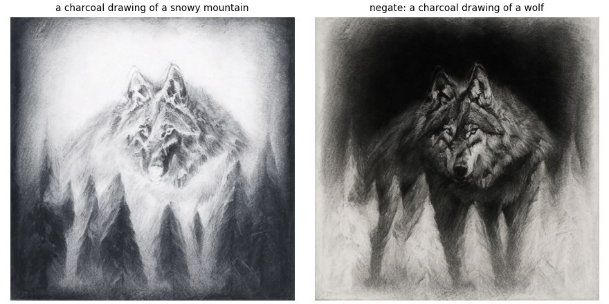
Bells & Whistles
Course Logo
We apply text-guided editing (3.2) to the Oski bottle-cap logo, whose round gold shape and ridged edge are already close to a coin. The course name is left out of the prompt, since the model does not render text reliably.
As shown below, for ts ≤ 0.06 only the round gold shape survives and the prompt dominates, giving a realistic coin with a grizzly bear relief. At 0.10, Oski’s face, hat, and ridged edge return as engraved gold, and we use this frame as the logo. Above 0.14 the cartoon colors return, and the “CAL” lettering degrades into “UCI” and “OAL”.
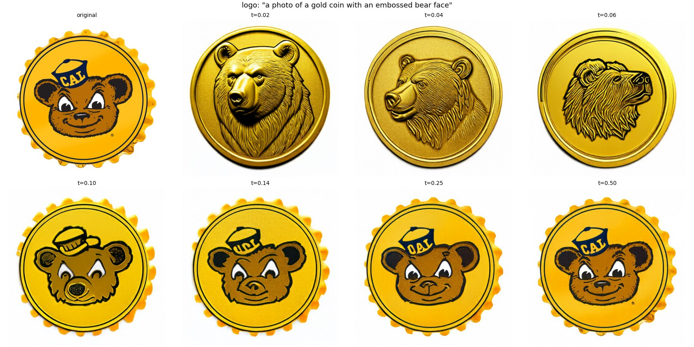
Part B · Flow Matching from Scratch
Part B · 1.1–1.2
Single-Step Denoising UNet
We train a UNet \(D_\theta\) to map a noisy digit \(z\) back to the clean digit \(x\). The UNet has two downsampling and two upsampling stages with hidden dimension \(D\), an average-pooling bottleneck, and skip connections by channel concatenation. Noisy inputs are generated by adding Gaussian noise with standard deviation \(\sigma\).
As shown below, digits are easy to read up to \(\sigma = 0.5\) and are mostly lost at \(\sigma = 1.0\).
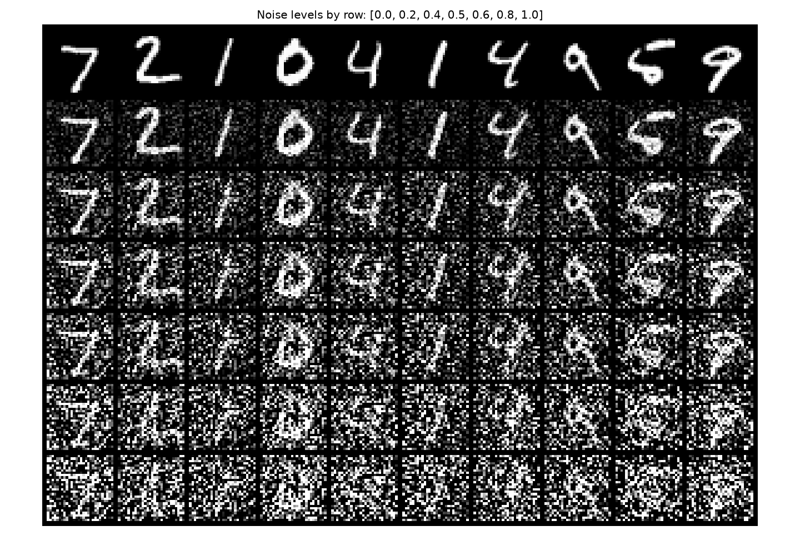
Part B · 1.2.1
Training the Denoiser
We train with \(\sigma = 0.5\) and the L2 loss below, using batch size 256, Adam with learning rate \(10^{-4}\), \(D = 128\), and 5 epochs. A new \(\epsilon\) is sampled every time a batch is fetched, so the model never sees the same noisy image twice.
As shown below, the loss drops sharply within the first epoch and then flattens. After epoch 1 the outputs are already clean but slightly blurry. After epoch 5 the strokes are sharper and closer to the originals.
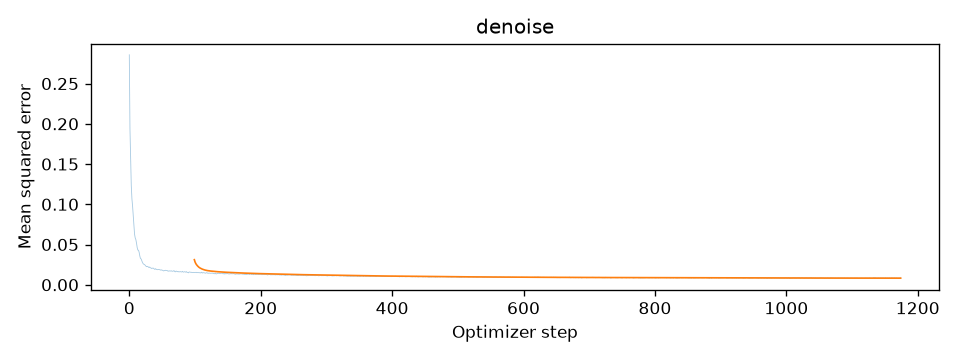
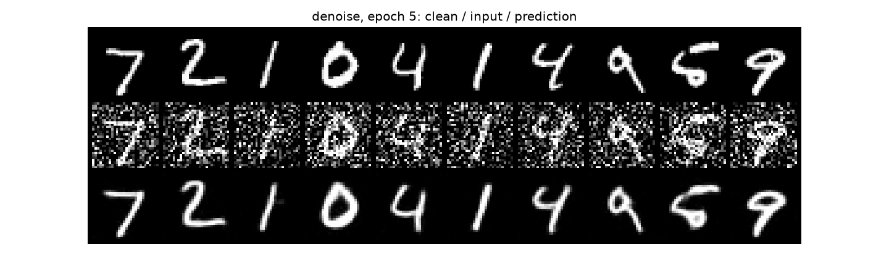
Part B · 1.2.2
Out-of-Distribution Testing
We evaluate the \(\sigma = 0.5\) model on a fixed test digit at noise levels it was not trained on.
As shown below, the denoiser generalizes well for \(\sigma \le 0.6\). At \(\sigma = 0.8\) the stroke starts to fade, and at \(\sigma = 1.0\) the 7 breaks into fragments, since the model never saw noise this strong during training.
Part B · 1.2.3
Denoising Pure Noise
We train the same model with pure noise \(\epsilon \sim \mathcal{N}(0, I)\) as input and clean digits as targets, with the same hyperparameters.
As shown below, the model outputs the same blurry blob for every input, which looks like a superposition of all digits. Since the input is independent of the target, the MSE-optimal prediction is the mean of the training set. The model learns to ignore its input and predict this average, so the loss plateaus around 0.07 instead of approaching zero.
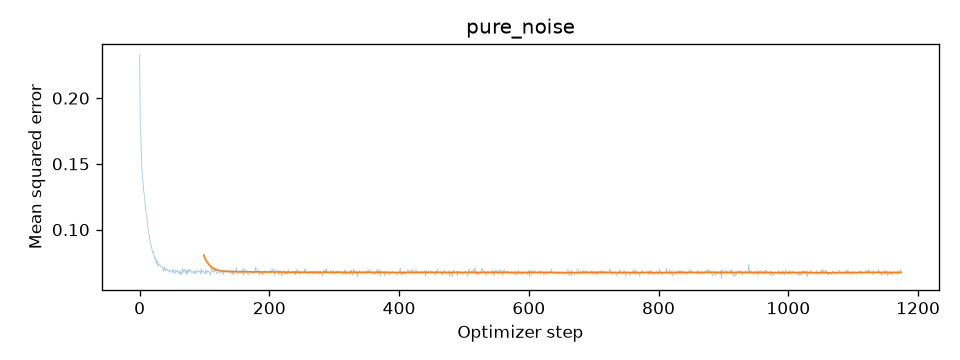
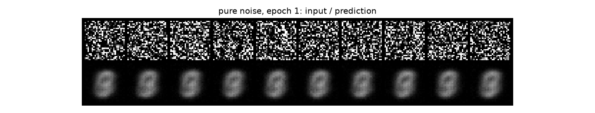
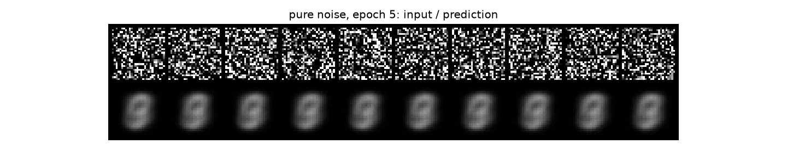
Part B · 2.1–2.2
Training a Time-Conditioned UNet
For flow matching, we interpolate between noise \(x_0\) and data \(x_1\) and train the UNet to predict the velocity \(x_1 - x_0\). We inject the scalar time \(t \in [0, 1]\) with two FCBlocks (Linear, GELU, Linear), whose outputs \(t_1, t_2\) scale the bottleneck and the first upsampling features.
We use \(D = 64\), batch size 64, and Adam with an initial learning rate of \(10^{-2}\), decayed by \(\gamma = 0.1^{1/10}\) after each of the 10 epochs. As shown below, the loss drops sharply in the first few hundred steps and then decreases slowly.
Part B · 2.3
Sampling from the Time-Conditioned UNet
We start from \(x_0 \sim \mathcal{N}(0, I)\) and integrate with Euler steps, using \(T = 50\) steps and the same seed for every checkpoint.
As shown below, epoch 1 produces stroke-like scribbles with no digit structure. By epoch 5 most samples resemble digits, and epoch 10 refines them, but many samples are still malformed or ambiguous, such as mixtures of 3 and 5 or 8 and 9. Without class information, the model has to pick a digit implicitly from the noise, and some trajectories end up between two digits.
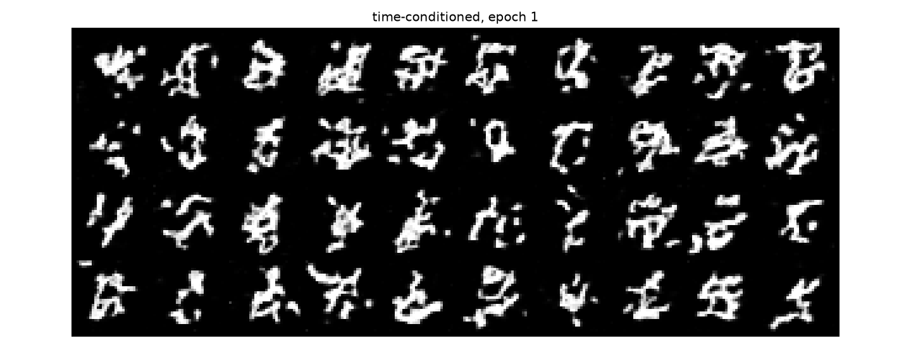
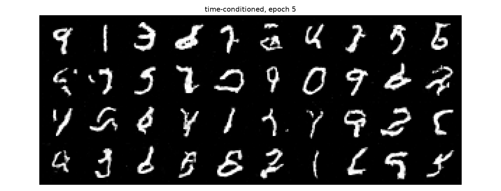
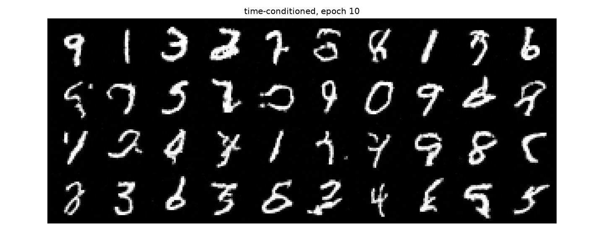
Part B · 2.4–2.5
Training a Class-Conditioned UNet
We add class conditioning with a one-hot vector \(c\) and two more FCBlocks. The class embeddings \(c_1, c_2\) scale the features and the time embeddings shift them. During training, \(c\) is set to zero with probability \(p_{\text{uncond}} = 0.1\), so the same network also learns the unconditional velocity needed for CFG. All other hyperparameters match 2.2.
As shown below, the loss behaves like the time-only model: a sharp initial drop followed by slow improvement.
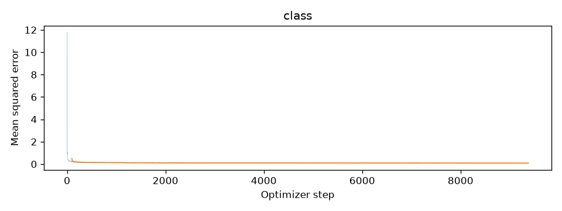
Part B · 2.6
Sampling from the Class-Conditioned UNet
We sample with classifier-free guidance using \(\gamma = 5\) and \(T = 300\) Euler steps, generating four samples of each digit.
As shown below, every digit is recognizable after epoch 1, although 4, 5, 8, and 9 still have broken strokes. By epoch 5 all classes are clean, and epoch 10 gives slightly bolder and more consistent digits. Conditioning removes the need to choose a digit from the noise, which is why this model converges much faster than the time-only one.
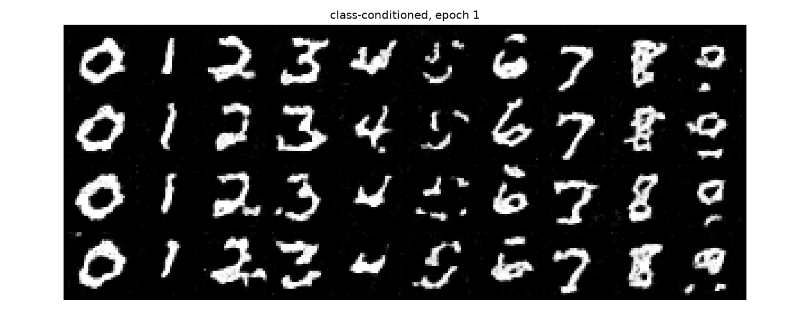
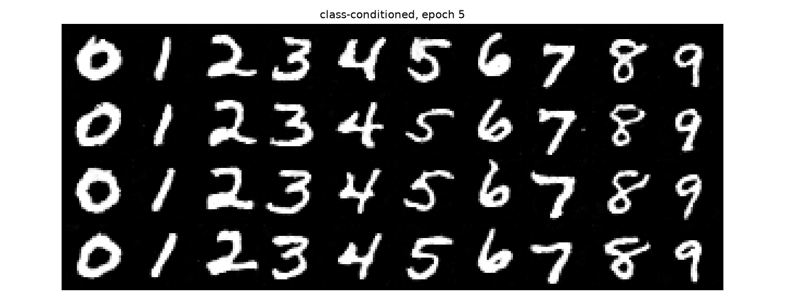
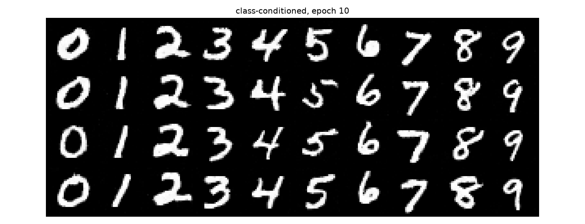
Removing the Learning Rate Scheduler
The scheduler decays the learning rate from \(10^{-2}\) toward \(10^{-3}\) over training. A constant \(10^{-2}\) would stay too large in the later epochs, so we instead train with a constant learning rate of \(10^{-3}\), the scheduler’s final value, for the same 10 epochs.
As shown below, the epoch-10 samples match the quality of the scheduled model. At epoch 1 the constant-rate model is even slightly better, since the scheduled model is still running at a large learning rate at that point.
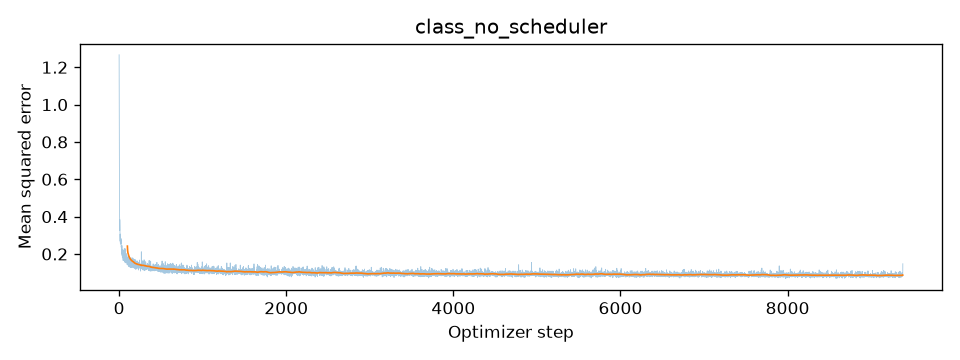
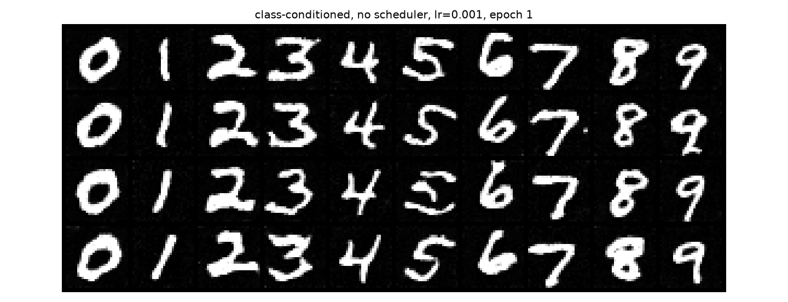
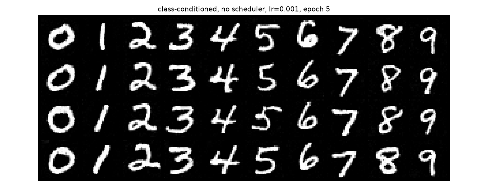
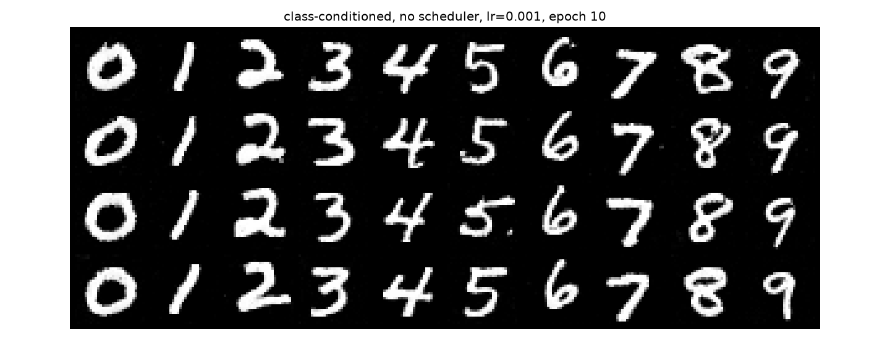
Part B · Bells & Whistles
A Better Time-Conditioned UNet
We increase the hidden dimension from \(D = 64\) to \(D = 128\) and train for 20 epochs instead of 10, with the exponential decay stretched over 20 epochs. Everything else matches 2.2. We also sample the final model with 100 and 200 Euler steps in addition to the default 50.
As shown below, the samples are cleaner than the epoch-10 model from 2.3 with the same seeds: strokes are smoother, there are fewer fragments, and more samples are clearly readable. Increasing the number of Euler steps to 100 or 200 leaves the samples nearly unchanged, so the remaining errors come from the learned velocity field rather than from integration error.
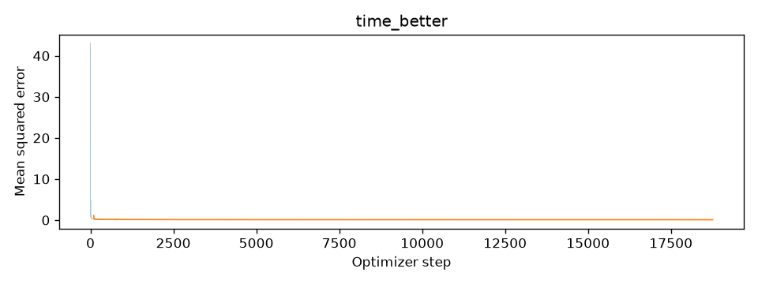
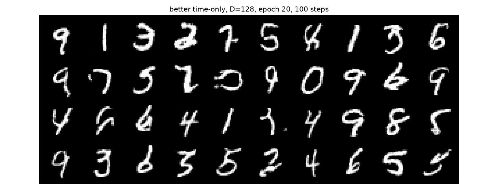